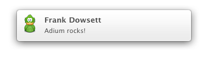

Visual notifications
Visual notifications are a means of unobtrusively informing you when things happen, for example when you receive a message. In their default configuration, they fade into the top-right corner of your screen for a moment and then fade out again.
Adium features comprehensive support for visual notifications by ways of OS X's very own Notification Center (on OS X 10.8 and later), third-party software Growl as well as built-in notifications called "Mist" (on OS 10.7 and older).
This page explains the three different notification mechanisms mentioned above. See Events on how to tell Adium when to display visual notifications.
Notification Center support (OS X 10.8 and later)

Apple introduced "Notification Center" (NC) in OS X 10.8 ("Mountain Lion").
Growl support
The third-party application Growl.app has been around about as long as Adium itself – a long time before Apple introduced "Notification Center" (NC) in OS X 10.8 ("Mountain Lion").
While Growl.app is the obvious solution for users on previous versions of OS X, it also has a lot to offer to OS X users on 10.8, especially in the way of customisability and extendability. For example, there are dozens of different styles to choose from.
To install Growl.app either buy the application from the Mac App Store, or get an older and free version from http://growl.info/downloads.
If you have Growl.app installed and would prefer to use Notification Center notifications for Adium, you need make the change in Growl's preferences.
To uninstall the Growl application, follow the instructions on the Growl website.
Built-in notifications ("Mist", OS X 10.7 and older)
As of Adium 1.5, Adium is able to show Growl-style notifications on OS X versions 10.7 and 10.6 without the Growl application installed. This feature is called Mist.
If you want to use a different style or use some of the more advanced features of Growl, you will have to either buy the application from the Mac App Store, or get an older and free version from http://growl.info/downloads.
To disable Mist notifications, enter this command in Terminal.app: defaults write -g com.growl.growlframework.mist.enabled -bool NO. Please note that this affects any apps that support built-in Mist notifications like Adium does.